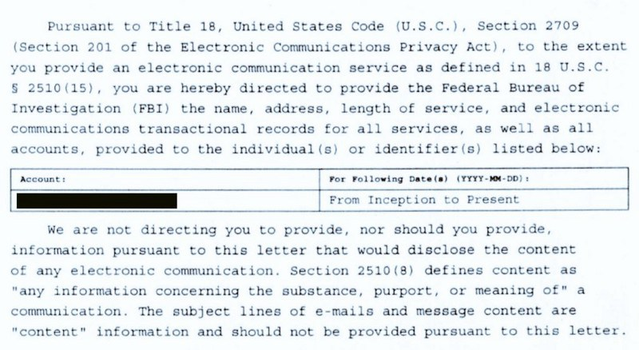

Переклав Вадим Гудима
Передмова перекладача
Ці правила підготовані експертом з цифрової безпеки the grugq для американських активістів, що все більше втягуються у спротив ультраконсервативному повороту політики США.
Експерти з цифрової безпеки, що працюють з активістами у Центрально-Східній Європі, зазвичай не розглядають американські спецслужби (FBI чи NSA) та компанії (як от Twitter) у якості реальних супротивників.
Утім, зі змінами політичного клімату в США та інших країнах Західної Європи активістам, що використовують популярні веб-сервіси для поширення своїх поглядів, варто ще раз переглянути власну модель загроз.
Сподіваємося, що цей гід буде вам корисним або принаймні змусить задуматись про те, як ви використовуєте соціальні мережі.
Правила для безпечнішого спротиву
Багато людей долучаються до політичної активності у спосіб, що, на їх думку, може мати негативні наслідки для їхньої роботи, кар’єри чи життя. Важливо зрозуміти, що ці страхи реальні, але публічність та відкритість спротиву критично важлива для його [спротиву – пер.] політичної легітимності. Цей гід може допомогти зменшити персональні ризики індивідів, водночас надаючи їм можливість діяти більш безпечно. Я не активіст і майже точно не живу у вашій країні. Ці керівні принципи є достатньо загальними і можуть бути корисними якомога більшій кількості людей.
Звісно, серйозна контррозвідувальна робота має й інші аспекти, але давайте запам’ятаємо ці три.
Найбільш критичним є дотримання принципів розмежування та приховування.
На практиці це означає, що вам потрібно повністю відділити ваше приватне життя від Twitter-акаунту,який ви використовуєте для спротиву.
Правила розмежування
Правила приховування
Практика веде до досконалості
Аматори тренуються, поки вони не навчаться робити правильно, професіонали тренуються, поки не звикнуть не робити неправильно.
Існує досить багато складних операційних правил та принципів, яких ви маєте дотримуватись неухильно та дисципліновано. Якщо ви будете “вчитись на помилках”,
то вас пов’яжуть з акаунтом, який ви намагаєтесь захистити. Найкраще, якщо ви спробуєте пройти усі кроки з дотриманням усіх правил на не “чутливому” профілі.
Впевніться, що ви до них звикли, що знаєте, як використовувати усі потрібні інструменти, що розумієте, як потрібно діяти та чому.
Деякі підпільні організації мають, те що називається “першою та останньою помилкою” – порушення правил безпеки веде до розкриття та викриття.
Ви – спротив, і тому зобов’язані переконатись, що ви можете використовувати інструменти спротиву не припускаючись помилок.
Тому практикуйтесь у безпечному середовищі, позбудьтесь притаманних початківцям помилок і вже потім впроваджуйте ці правила й інструменти та безпечно дійте там, де це справді важливо.
Супротивник
Є кілька серйозних супротивників, що можуть деанонімізувати користувача Twitter-акаунту. Ось їх неповний перелік:
Їх здібності, мотивації та можливості різняться, і щоб уникнути викриття та захистити себе від них потрібно застосовувати різні техніки.
Хоча перед викривальними силами таких масштабів може стати страшно, ви в силах досить добре себе захистити.
Більшість із потрібних кроків не вимагають важкої роботи, втім, підтримка сильного захисту протягом тривалого часу може вимагати дисципліни.
Пам’ятайте – авторитарні режими не займають весь свій час полюванням на малу здобич. Малоймовірно, що вся сила державного апарату буде скерована на вас, якщо ви не сприймаєтесь як проблема.
Вашою найбільшою загрозою буде, ймовірно, ваша ж балакучість, а найбільшим ризиком – втрата роботи (чи чогось подібного) й посилена увага публіки протягом одного-двох циклів новин.
Це може бути неприємно, але ви це переживете. Страх того, що може статись, часто гірший самої події, намагайтесь через це не доводити себе до стресу.
Психологічні ризики
Після того, як ви захистили себе технічними засобами та правилами безпеки, найбільшою вашою загрозою будете ви самі. Створення та підтримка секретної ідентичності може бути дуже стресовим заняттям, що потребує певного роздвоєння особистості. У довготривалій перспективі це може бути дуже травматичним для вашого психічного здоров’я, саме тому куратори шпигунів часто виступають для останніх в ролі психологів – створюють усі можливості, щоб ті могли безпечно та вільно розповісти про себе та свої переживання.
Будучи веб-сервісом, Twitter збирає (і купує у так званих “дата-брокерів”) дуже багато інформації про своїх користувачів. Влада і, до певної міри, громадськість матимуть доступ до цієї інформації через судові запити або інші юридичні інструменти.
Ця інформація постійно зберігається у Twitter і може бути отримана владою будь-якого моменту. Агенти уряду захочуть отримати всі зібрані дані й будуть шукати будь-які зачіпки. ФБР – великі знавці в роботі з мережею Tor і швидко знаходять потрібні публічні вихідні вузли (Tor exit relays). Будь-який VPN-сервіс може отримати вимогу передати свою інформацію, яка, скорш за все, міститиме прості для ідентифікації рахунки про сплату послуг. Якщо VPN-провайдер використовує приватний хостинг (як, наприклад, Algo чи Streisand), то власник цих серверів також отримає вимогу про передачу інформації знову ж таки, рахунки про сплату та IP-адреса, використана для створення акаунту, будуть найбільш інкримінуючими. Найбезпечнішою опцією буде використовувати Tor, і робити це з фанатичною відданістю. З моменту створення акаунту, під час публікації кожного твіту та будь-якої взаємодії в Інтернеті. Альтернативою може бути зміна призначення старого існуючого акаунту, створеного кимось, хто вас не зрадить. Це все одно ризиковано, адже чим більше людей знатимуть про акаунт та хто стоїть за ним, тим більш імовірним є витік інформації. І, звісно, коли у вас буде акаунт, завжди використовуйте Tor.
Коротка версія